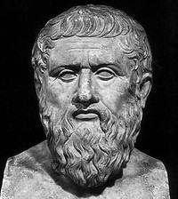

THE REPUBLIC
REVIEW
Just like the rest of Plato’s opera, “The Republic” is a dialogue. A Socratic one, in fact. Meaning: its main character is Socrates (Plato’s teacher); and the philosophical ideas are presented by way of discussions between him and his arguers. “The Republic” is mostly an elaboration of the ideal state, the beautiful city, Kallipolis. However, that is the case only because – Socrates claims – we can’t discuss justice or the just individual independently of the just society. In fact, the real question posed to Socrates at the beginning of the book is much more problematic. Namely, would a man who owns the Ring of Gyges – and, through it, the power to be invisible at will – will find the strength to be moral and just? Socrates’ answer: yes. If the state hasn’t corrupted his innate goodness before that.
But, how would the state preserve it? Obviously: through good organization. And, according to Socrates (and Plato), a good state means a state-tailored to the needs of the individual. And since the soul of an individual has three parts, the state should have as many. Which are these three parts? First of all, we have the rational part. This is the golden part of our souls and the one which makes us ask questions such as “Who am I?”, “What am I doing here?” or “What is justice?” It’s the part interested in truth – and enamored with goodness.
QUOTES
“The soul takes nothing with her to the next world but her education and her culture. At the beginning of the journey to the next world, one's education and culture can either provide the greatest assistance, or else act as the greatest burden, to the person who has just died.”
“In practice people who study philosophy too long become very odd birds, not to say thoroughly vicious; while even those who are the best of them are reduced by...[philosophy] to complete uselessness as members of society.”
- Plato
Author
Plato (429?–347 B.C.E.) is, by any reckoning, one of the most dazzling writers in the Western literary tradition and one of the most penetrating, wide-ranging, and influential authors in the history of philosophy. An Athenian citizen of high status, he displays in his works his absorption in the political events and intellectual movements of his time, but the questions he raises are so profound and the strategies he uses for tackling them so richly suggestive and provocative that educated readers of nearly every period.